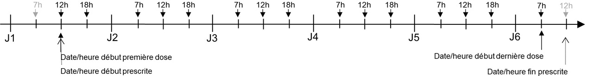

Guide d'implémentation du médicament
0.1.0 - ci-build

Guide d'implémentation du médicament
0.1.0 - ci-build

Guide d'implémentation du médicament - Local Development build (v0.1.0) built by the FHIR (HL7® FHIR® Standard) Build Tools. See the Directory of published versions
La prescription est un ensemble de lignes de prescription, représentées chacune par une ressource MedicationRequest profilée FrMedicationRequest pour les prescriptions de médecine de ville et les prescriptions hospitalières exécutables en ville (PHEV) et FrInPatientMedicationRequest pour les prescriptions intrahospitalières.
La prescription en tant que telle (le regroupement de lignes de prescription), n’est pas représentée par une ressource FHIR. En accord avec les guidelines d’HL7 International, le lien entre les différentes ressources regroupées dans une prescription est représenté par l’élément MedicationRequest.groupIdentifier.
Chaque ligne de prescription est composée d’un médicament prescrit et de sa posologie.
Le médicament prescrit est représenté par l’élément MedicationRequest.medication[x] (1..1) du profil FrMedicationRequest ou FrInpatientMedicationRequest, celui-ci peut être représenté sous forme d’une référence vers une ressource Medication suivant le profil idoine (cf. paragraphe suivant) ou d’un concept codé (CodeableConcept).
Selon qu’un médicament prescrit référencé est un médicament simple ou un médicament composé de plusieurs médicaments simples, le médicament prescrit est représenté par deux variantes de ressource Medication:
Dépendance des ressources profilées par Interop’Santé
Noter qu’un médicament simple peut être une association de plusieurs principes actifs. Ce n’en est pas moins un médicament simple représenté par une ressource FrMedicationNonCompound. Ex : CODOLIPRANE 500 mg/30 mg, cpr dont le code UCD est 3400893936047 contenant 500 mg de paracétamol et 30 mg de codéine*
La posologie est représentée par l’élément dosageInstruction de la ressource MedicationRequest.
Date de début, date de fin et durée de prescription
Elles traduisent la période d’exécution de la prescription.
Cette information est portée indivuellement par chaque ligne de prescription, c’est à dire au niveau de la ressource MedicationRequest profilée par FRMedicationRequest ou FrInpatientMedicationRequest, comme paramètre de la posologie prescrite, dans l’élément dosageInstruction de type Dosage, sous-élément timing de type Timing
.dosageInstruction.timing.repeat.boundsPeriod.start.dosageInstruction.timing.repeat.boundsPeriod.end.dosageInstruction.timing.repeat.boundsDuration, les date de début et date de fin ne figurent pas dans la ressource (dans le cas des prescriptions de médecine de ville ou des prescriptions hospitalières à exécution en ville).Ces dates de début et de fin de prescription, de même que la durée de prescription, ne sont pas des consignes de dispensation. Elles ne figurent donc pas dans les éléments .validityPeriod et .expectedSupplyDuration de l’élément .dispensationRequest.
En prescription intrahospitalière, il n’y a généralement pas de consigne de dispensation formulée par le prescripteur. Il n’y a donc généralement pas usage de l’élément .dispensationRequest.
Les prescriptions FHIR peuvent contenir plusieurs parties textuelles:
Eléments de posologie non structurés
Certains éléments de posologie ne peuvent pas être représentés de manière complètement structurée ou doivent obligatoirement être représentés sous forme textuelle. Ces éléments sont renseignés dans un élément MedicationRequest.dosageInstruction.additionalInstruction.text.
Note 1: L’élément MedicationRequest.dosageInstruction.patientInstruction pourrait également être utilisé pour certaines indications complémentaires pour la posologie. Mais le choix entre MedicationRequest.dosageInstruction.patientInstruction et MedicationRequest.dosageInstruction.additionalInstruction.text n’est pas toujours évident. Afin de simplifier le profil, il a été décidé de n’utiliser que MedicationRequest.dosageInstruction.additionalInstruction.text qui peut être multivalué et éventuellement associé à un code. En conséquence, le profil FrMedicationRequestinterdit l’usage de MedicationRequest.dosageInstruction.patientInstruction
Note 2: L’élement MedicationRequest.dosageInstruction.additionalInstruction.text est réservé pour les éléments de posologie qui ont été renseignés “à la main” et ne peuvent pas être représentés de manière structurée. Il ne doit pas être utilisé pour du texte généré automatiquement à partir de données structurées.
Exemples d’éléments de posologie non structurés
MedicationRequest.dosageInstruction.timing.repeat.when ni dans le jeu de valeurs complémentaire fr-additional-when-codes associé à l’extension fr-additional-when-values
MedicationRequest.dosageInstruction.timing.repeat.when qui est monovalué
MedicationRequest.dosageInstruction.asNeededCodeableConcept
Spécificité ville
Dans le cas d’une dose calculée, si elle est fournie en plus de la valeur absolue, la valeur relative (ex. formule de calcul) doit être indiquée textuellement dans MedicationRequest.doseInstruction.additionalInstruction.text et non indiquée dans la partie structurée.
Version textuelle de la posologie
Afin de permettre l’affichage de la posologie par tous les logiciels, y compris ceux qui n’ont pas la possibilité d’interpréter la structuration de la posologie, la posologie associée à une ligne de prescription est à indiquer dans l’extension renderedDosageInstruction qui préfigure l’élément MedicationRequest.renderedDosageInstructionen FHIR R5.
Version textuelle de la prescription
Même si une version textuelle de la prescription est produite automatiquement dans MedicationRequest.text, elle est souvent difficile à comprendre quand on ne maitrise pas FHIR. Une version textuelle de l’ensemble de la ligne de prescription représentée par la ressource MedicationRequest peut être renseigné dans l’élément MedicationRequest.note.text. Dans l’éventualité où la ressource MedicationRequest aurait plusieurs éléments MedicationRequest.note il est recommandé d’ajouter le préfixe “Prescription textuelle:” à l’élément MedicationRequest.note afin de simplifier la compréhension.
Cas particulier de la traduction PN13 en FHIR
PN13 intègre beaucoup d’éléments textuels qui ne peuvent être indiqués que dans l’élément MedicationRequest.note. Afin de permettre de discriminer la portée de chaque note, l’extension fr-medicationrequest-note-scope a été créée. Elle n’est utilisée que dans le cas de prescription initalement en PN13 retranscrites en FHIR.
Les deux terminologies utilisables pour représenter les unités d’administration dans les posologies sont UCUM et EDQM.
Toute unité utilisée pour une posologie qui ne correspond pas à un code natif de ces terminologies ne doit être exprimé que par l’élément unit du datatype Quantity et des datatypes dérivés, les éléments code et system ne doivent pas à utiliser.
En particulier, les non unit UCUM (code entre accolades {} ou entre crochets []) ne doivent pas être utilisées.
Recommandation pour faciliter la dispensation
Lorsqu’une unité d’administration n’est pas en UCUM et EDQM et qu’il est donc difficile de traduire la prescription en nombre de “boite” de médicament à dispenser, il est recommandé que le prescripteur mette une indication de ce qui doit être dispensé dans une unité “convertible”. L’extension prescribedQuantity, héritée du profil européen, est à utiliser dans ce cas.
Sauf indication contraire dans la prescription via l’élément MedicationRequest.dosageInstruction.additionalInstruction.text, la structuration de la posologie (ex. l’utilisation de l’élément MedicationRequest.dosageInstruction.timing.repreat.when) ne doit pas interdire de rattraper une dose qui n’a pas été prise au bon moment.
Ces précisions concernent les dates et durée de prescription de la ligne de prescription représentée par une ressource MedicationRequest profilée FrMedicationRequest ou FrInPatientMedicationRequest.
Elles concernent également les règles définissant la première dose prescrite et la dernière dose prescrite.
Deux dates, de début et de fin, de la ligne de prescription doivent être considérées :
Date/heure de début prescrite de la ligne de prescription (MedicationRequest)
Définit la date/heure de début exprimée par le médecin lors de sa prescription. Note: Si seule la durée du traitement est exprimée, la date de début correspond à la date de la première prise.
La première dose prescrite:
Date/heure de fin prescrite de la ligne de prescription (MedicationRequest)
Définit la date/heure de fin exprimée par le médecin lors de sa prescription. Note: Si seule la durée du traitement est exprimée, la date de fin correspond à la durée du traitement après la date de la première prise.
La dernière dose prescrite:
dosageInstructiondosageInstructionLa date/heure de fin d’administration de la dernière dose (sa date/heure de début + sa durée d’administration) peut être supérieure à date/heure de fin prescrite.
Durée de prescription:
Elle est liée aux deux paramètres précédents. Quand ces trois paramètres sont exposés à l’utilisateur pour saisie, en général il en fixe deux et le troisième est calculé. Pour les prescriptions de médecine de ville ou les prescriptions hospitalières à éxecution en ville, il est possible que seule la durée de prescription soit exprimée les dates de début et fin dépendant de quand le patient se fait délivrer les médicaments.
Les unités UCUM suivantes sont utilisées :
jour (code = d) : égale 24h.
mois (code = mo) : égale 28, 29, 30 ou 31 jours selon les mois impliqués.
Garantie du nombre de doses prescrites sur une période donnée:
Pour garantir qu’une prescription de, par exemple, 3 doses par jour pendant 5 jours, donne bien systématiquement 15 doses prescrites, comme logiquement attendu, et non pas 15 ou 16 en fonction des circonstances, il est spécifié dans ce guide d’implémentation que la date/heure de fin prescrite est exclue. En d’autres termes, l’intervalle [ date de début prescrite, date de fin prescrite [ est semi-ouvert.
Illustration Date de fin prescrite exclue : 15 doses (3/j x 5j = 15)

En effet, si la date de début prescrite est égale à la date de début de la premiére dose, un intervalle fermé incluant de la date de fin prescrite conduira à la prescription de 16 doses.
Illustration
Si la date de fin prescrite était incluse : 16 doses (3/j x 5j = 16) !

Note: Dans FHIR, le type Period, utilisé pour porter le couple (date de début, date de fin), stipule que les bornes, start et end, sont incluses. L’interval est fermé.
Un interval semi-ouvert, par exemple [ 2021-02-14T12:34:56, 201-05-14T12:34:56 [, se traduira par un élément Period dans lequel
Rappel: Dans FHIR, le type datetime impose de donner les horaires à la seconde près lorsque l’heure est renseignée : format hh:mn:ss. Il est précisé que l’utilisateur fait son affaire de la granularité à l’heure ou à la minute près en remplissant les minutes et les secondes manquantes par des 00.
Néanmoins, pour exprimer l’horaire de fin exclu à la granularité horaire ou minute, il conviendra de remplir les minutes ou secondes manquantes par 59.
Par exemple 3j à partir du 14 fév 2021 12h34 (résolution à la minute)
ou 3j à partir du 14 fév 2021 12h (résolution à la tranche horaire)
Date/heure de début effective et Date/heure de fin effective de la ligne de prescription:
Ces deux dates ne figurent pas dans MedicationRequest R4.
Dans la R5, un élément [effectiveDosePeriod](https://www.hl7.org/fhir/medicationrequest-definitions.html#MedicationRequest.effectiveDosePeriod) conçu pour accueillir ces deux dates a été ajouté.
Note PN13:
Les règles de gestion suivantes doivent être appliquées pour définir ces deux dates en fonction de la collection de dosageInstruction associée au MedicationRequest. Elles reprennent celles de PN13 et sont conformes à la définition de la R5.
dosageInstruction.dosageInstruction.Illustration
1 comprimé 3 fois par jour (7h, 12h, 18h) pendant 5 jours, prescrit à 10h30, à partir de maintenant (10h30), donc 1ère dose à 12h.

Notes
Dans cet exemple,
dosageInstruction.doseAndRate.RateRatio.denominator, à la date/heure de début d’administration de cette dernière dose.dosageInstruction rattachés à MedicationRequest, c’est l’interprétation de la collection de dosageInstruction qui doit conduire au calcul de ces dates/heures début/fin effectives de MedicationRequest (fonction min() pour les dates de début, fonction max() pour les date de fin).Illustration
G5 1L sur 12h, 2 fois par jour (10h, 22h) pendant 5 jours, prescrit à 9h30, à partir de maintenant (9h30), donc 1ère dose à 10h.

Note
Dans cet exemple
Pour les posologies conditionnelles d’un évènement aléatoire, « si douleur » par exemple, il faut prendre comme dates/heures de début/fin de MedicationRequest celles de la période de prise en compte de l’évènement.
Les liens entre lignes de prescription peuvent bien sûr être indiqués dans les éléments MedicationRequest.dosageInstruction.additionalInstruction.text. Cependant, afin de faciliter la constitution automatisée de plan de prise et assurer une meilleure sécurité de prise, il est possible d’en modéliser certains via une ressource RequestGroup. La ressource RequestGroup utilisée pour représenter ces liens est liée aux ressources MedicationRequestconcernées par l’élément groupIdentifier
Point d’attention
L’utilisation de la ressource RequestGroup impose que les MedicationRequestliées aient comme valeur optionpour MedicationRequest.intent. Il est donc primordial pour toute MedicationRequest avec option comme intent de rechercher d’éventuelles ressources RequestGroup ayant le même groupIdentifier pour vérifier s’il s’agit d’une ligne de prescription liée à une autre.
Médicaments à prendre en même temps
Les lignes de prescription correspondant à des médicaments à prendre en même temps sont liées par une ressource RequestGroupréférençant chaque ligne dans un occurrence de RequestGroup.action(via RequestGroup.action.resource.reference). La prise en même temps est représentée par une relation de type concurrent entre les deux actions.
Médicaments à prendre avec un intervalle de temps
Les lignes de prescription correspondant à des médicaments à prendre avec un intervalle de temps entre les deux sont liées par une ressource RequestGroupréférençant chaque ligne dans un occurrence de RequestGroup.action(via RequestGroup.action.resource.reference). La prise en différée est représentée par une relation de type after ou beforeentre les deux actions.
Alternative entre deux médicaments
Les lignes de prescription correspondant une alternative sont liées par une ressource RequestGroupréférençant chaque ligne dans un occurrence de RequestGroup.action(via RequestGroup.action.resource.reference). L’alternative est représentée par la valeur ALT dans l’extension fr-additional-action-relationship au niveau de l’élément RequestGroup.action.relatedAction, la valeur de RequestGroup.action.relatedAction.relationship étant fixée à concurrent. L’action qui porte cette relation référence le médicament de “seconde intension” si le premier n’est pas adapté. Les conditions d’utilisation du médicament de “seconde intension” sont à indiquer dans RequestGroup.action.description